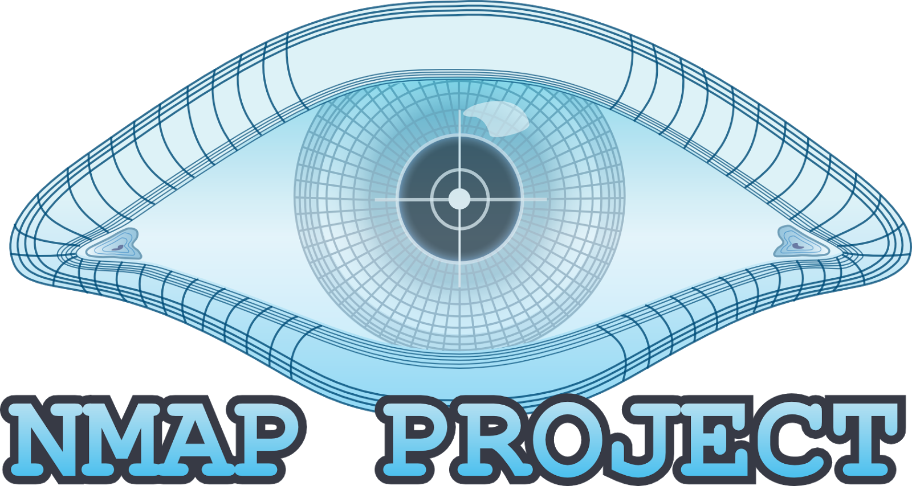

Scanning
Rémi Martin de abia
Lors de la dernière séance nous avons vu :
- Comment faire une reconnaissance de la cible
- Comment récupérer des informations sur une cible
Today's programme
Reconnaissance Prise d'informations- Scanning Découverte du réseau
- Gain d'accès Attaque !
- Maintient d'accès Backdoor
- Nettoyage Vidage des logs
Notions réseau
- Un port est une sorte de porte par la quelle passe un flux
- Un port est soit ouvert, soit fermé
- Si un port est ouvert c'est qu'un service écoute sur ce port
Quelques ports connus
- 20/21 : FTP
- 22 : SSH
- 23 : Telnet
- 80 : HTTP
- 443 : HTTPS
TCP / UDP
2 protocoles de communication
TCP vérifie l'intégritée des données, UDP est plus rapide
Echange TCP
Dans un échange TCP on trouve un 3way Handshake

Savoir si un port TCP est ouvert (Full/Half Scan)
On envoit un paquet "SYN", si on nous renvoit un SYN/ACK c'est ouvert
Si on nous renvoit un "RST" c'est fermé :)
Nmap

Nmap
Scanner de ports ( entre autre )
L'outil à tout faire.
Nmap donne
- Les ports ouverts
- Les noms des services /!\
- Les versions des services
- Des informations sur la machine ..
Pour beacoup nmap est suffisant
En pratique on va le coupler avec des scanners de vulns
Un scanner de vulns qu'est ce que c'est ?
Un tools qui va faire le travail que vous avez fait la dernière fois :)
Il étudie les ports ouverts, les versions des binaires et les met en relation avec les bases de vulnérabilités
Qui utilise ces outils ?
Les Hackers, les admin system ..
Il est très important de connaitre ses vulnérabilités.